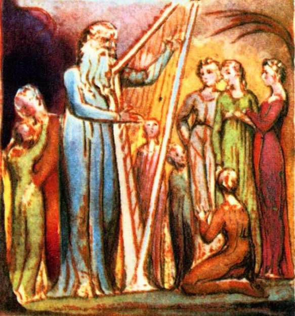

Hazzın gençliği buraya gel
Ve gör açılış şafağını,
Hakikatin yeni doğmuş imgesini.
Kuşku uzaklaşır, kaçıp gider aklın bulutları
Cahilce tartışmalar, kurnazca sataşmalar.
Budalalık bitimsiz bir labirent,
Dolaşık kökler yollarını şaşırtır,
Kaç kişi düştü oraya!
Takılıp ölünün kemiklerine tökezlerler bütün gece
Ve bilmediklerini hissederler nedir bu, ama önemserler,
Ve diğerlerini de götürmek isterler,
Götürülmeleri gerektiğinde.
